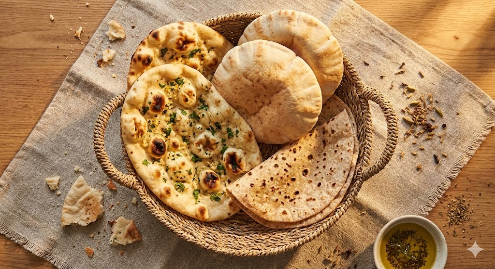

Fladenbrote: Die Mutter aller Brote
Bevor es Backöfen gab, gab es den heißen Stein. Fladenbrot ist die ursprünglichste Form, Getreide essbar zu machen. Es benötigt wenig Brennstoff, wenig Zeit und kein kompliziertes Werkzeug.
1. Die große Trennung: Hefe oder nicht?
Die Welt der Fladenbrote teilt sich in zwei Lager.
Ungesäuert (Ohne Triebmittel)
Nur Mehl, Wasser, Salz. Der Teig ruht nur kurz. Er bleibt beim Backen flach und flexibel. Ideal zum Einwickeln von Essen (Wraps).
Beispiele: Chapati, Yufka, Lavash, Tortilla.
Gesäuert (Mit Hefe/Sauerteig)
Der Teig gärt und bildet Gasblasen. Das Brot wird im Ofen dick, weich und fluffig. Ideal zum Tunken.
Beispiele: Naan, Pita, Pide, Bazlama, Injera.
2. Die Hitze-Technik (Tandoor)
In Zentralasien und Indien nutzt man den Tandoor – einen riesigen Tonkrug, der im Boden eingelassen ist und unten mit Holzkohle befeuert wird.
Der Bäcker klatscht den Teigfladen mit einem nassen Kissen direkt an die senkrechte, heiße Innenwand (ca. 400°C). Das Brot backt vertikal, trotzt der Schwerkraft und bekommt seine typische Tropfenform und die Blasen.
3. Das Geheimnis der Pita-Tasche
Wie kommt das Loch in die Pita, ohne dass man es aufschneidet? Es ist reine Physik.
Der Dampf-Effekt
Ein Pita-Teig wird flach ausgerollt und bei extrem hoher Hitze auf den heißen Stein gelegt.
- Die äußere Haut verkrustet sofort und wird dicht.
- Das Wasser im Inneren des Teigs verdampft explosionsartig.
- Da der Dampf nicht durch die Kruste entweichen kann, drückt er die obere und untere Teigschicht mit Gewalt auseinander.
Dies ist die technische Basis für jeden Döner Kebab!
4. Globale Vielfalt (14 Varianten)
Jede Kultur hat ihre Version – angepasst an das Getreide, das dort wächst.